17 Complex Analysis
By viewing the war as an act of (the maximum use of) force, Clausewitz (2006) defined the war as a duel of imposing the will of one force onto its’ opponent(s).507 “I shall proceed from the simple to the complex. But in war more than in any other subject we must begin by looking at the nature of the whole; for here more than elsewhere the part and the whole must always be thought of together.” - Clausewitz (2006) Later a scientific simplification of Clausewitz’s duel stood out with the following form: \[\left[\begin{array}{c} \frac{\mbox{d}x_{1}(t)}{\mbox{d}t}\\ \frac{\mbox{d}x_{2}(t)}{\mbox{d}t} \end{array}\right]=\left[\begin{array}{cc} 0 & a_{12}\\ a_{21} & 0 \end{array}\right]\left[\begin{array}{c} x_{1}(t)\\ x_{2}(t) \end{array}\right]\tag{17.1}\] where \(x_{1}(t)\) and \(x_{2}(t)\) are the numbers of force units in the two sides at time \(t\), their derivatives represent the attrition rates, and the non-zero coefficient \(a_{i}\) represents the effective firing rate of a single force unit. You may not be surprised to see similar forms as equation (17.1) for modeling love affairs (Romeo and Juliet model), modeling Yin and Yang, or describing Newton’s laws in pendulums. So I suggest that we start our exposition of complexity from here.
17.1 Coupling and Complexification
Without any further restriction of variables \(x_1(t)\) and \(x_2(t)\), the system (17.1) is equivalent to a second-order differential equation of a single variable. The re-written system is508 One can check the equivalence by substituting \(a_{12}x_{2}=\mbox{d}x_{1}(t)/\mbox{d}t\) into the second order differentiation: \[\begin{align*}\frac{1}{a_{12}}\frac{\mbox{d}^{2}x_{1}(t)}{\mbox{d}t^{2}}&=\frac{1}{a_{12}}\frac{\mbox{d}}{\mbox{d}t}\left(a_{12}x_{2}(t)\right)\\ &=\frac{\mbox{d}x_{2}(t)}{\mbox{d}t}.\end{align*}\] The above result implies \(\mbox{d}x_{2}(t)/\mbox{d}t=a_{21}x_{1}(t)\). \[\frac{1}{a_{12}}\frac{\mbox{d}^{2}x_{1}(t)}{\mbox{d}t^{2}}-a_{21}x_{1}(t)=0.\] To understand the dynamics of this differential equation, we study the behavior of eigenvalues for the differentiation operator \(\mbox{d}(\cdot)/\mbox{d}t\). The characteristic polynomial of the eigenvalues is given by509 Recall that \[\begin{align*}(\frac{\mbox{d}}{\mbox{d}x_{1}})(v)=&\lambda v,\\ (\frac{\mbox{d}^2}{\mbox{d}x^2_{1}})(v)=&\lambda^2 v,\end{align*}\] under the eigenfunction \(v\). \[\frac{1}{a_{12}}\lambda^{2}-a_{21}=0.\] When \(a_{12}\neq a_{21}\), given the same initials \(x_1(0)=x_2(0)\), the equation \(\lambda^2 = a_{12}a_{21}\) provides three possible solution sets of the eigenvalues \(\lambda_1\) and \(\lambda_2\).510 Figure 17.1 shows the numerical demonstrations of four possible combinations of the coefficients pair \(a_{12}\) and \(a_{21}\): the pair have both negative signs, negative and positive signs, both positive signs, finally, positive and negative signs. When the signs are positive, the pair tend to form the wave curves; when both signs are positive, the pair both grow; when both signs are negative but have different values, the pair diverge, one growing and the other, with a bigger negative value, falling. Note that it is not possible to have simultaneous falling in this “magical” coupling structure.
When \(a_{12}, a_{21}>0\), we have \(\lambda_{1},\lambda_{2}>0\). One may expect that the system (17.1) has two simultaneously growing components \(x_1(t)\) and \(x_2(t)\).
When \(a_{12}, a_{21}\) have opposite signs, then \(\lambda^2<0\) implies both \(\lambda_{1}\) and \(\lambda_{2}\) contain the imaginary unit \(\mbox{i}\). In this case, one may expect to see some rotational dynamics of \(x_1(t)\) and \(x_2(t)\).511 One can compute the eigenvalues by solving the zero determinant of \(\mathbf{A}-\lambda\mathbf{I}\), which is \[\begin{align*}&\mbox{det}\left[\begin{array}{cc} -\lambda & a_{12}\\ a_{21} & -\lambda \end{array}\right]\\ &=\lambda^{2}-a_{12}a_{21}=0.\end{align*}\] Obviously, if \(a_{12}a_{21}<0\), namely \(a_{12}\) and \(a_{21}\) with oppositive signs, then the distinct roots of the characteristic function will contain the imaginary unit \(\mbox{i}\).
When \(a_{12}, a_{21}<0\), we have \(\lambda_{1},\lambda_{2}<0\). One may expect to see the monotonic patterns of both components. But due to the negativity, two components will move in the opposite direction. Suppose that \(\lambda_{2}<\lambda_{1}<0\), then \(x_{2}(t)\) is falling while \(x_{1}(t)\) is rising.
 Figure 17.1: Possible dynamical patterns
Figure 17.1: Possible dynamical patterns
Code
Perhaps, the most interesting patterns in these three cases (shown in figure 17.1) are the waves induced by the opposite signs of the coefficients in case 2. In this case, each pair of the coefficients induces two waves oscillating in a corresponding manner. These kinds of waves are said to be coupled. For example, let \[\mathbf{A}=\left[\begin{array}{cc} 0 & -2\\ 1 & 0 \end{array}\right].\] The eigenvalues of \(\mathbf{A}\) are \(\mbox{i}\sqrt{2}\) and \(-\mbox{i}\sqrt{2}\).512 The associated eigenvectors of \(\mbox{i}\sqrt{2}\) and \(-\mbox{i}\sqrt{2}\) could be, for example, \([\sqrt{2},-\mbox{i}]\) and \([\sqrt{2},\mbox{i}]\), respectively. In this case, we have \[ \begin{align*}\mathbf{V}=\left[\begin{array}{cc} \sqrt{2} & \sqrt{2}\\ -\mbox{i} & \mbox{i} \end{array}\right], \\ \mathbf{V}^{-1}=\frac{1}{\mbox{i}2\sqrt{2}}\left[\begin{array}{cc} \mbox{i} & -\sqrt{2}\\ \mbox{i} & \sqrt{2} \end{array}\right].\end{align*}\] A simple calculation leads to \(\mathbf{V}^{-1}\mathbf{A}\mathbf{V}=\mbox{diag}[\mbox{i}\sqrt{2},-\mbox{i}\sqrt{2}]\). The imaginary eigenvalues are of the same absolute sizes but different signs. This specification will make \(x_1(t)\) and \(x_2(t)\) travel on an ellipsoidal orbit in the phase plots, see figure 17.2. Therefore, the two equations are coupled.513 If the entities’ signs exchange, namely \(a_{12}>0\) and \(a_{21}<0\), a similar movement pattern will occur, but the rotation will be oriented in the opposite direction.
 Figure 17.2: Phase plot of coupled waves (the second and the fourth curves in the previous figure)
Figure 17.2: Phase plot of coupled waves (the second and the fourth curves in the previous figure)
We can almost confirm that the waves or the ellipses in the figures are induced by the imaginary unit \(\mbox{i}\) that emerges in the coupling structure.
We can decompose any \(2\times2\) matrix \(\mathbf{A}\) into \[\left[\begin{array}{cc} a_{11} & 0\\ 0 & a_{22} \end{array}\right]+\left[\begin{array}{cc} 0 & a_{12}\\ a_{12} & 0 \end{array}\right]\] a diagonal matrix and an off-diagonal matrix. The diagonal matrix will induce a decoupling system of two independent differential equations with the possibilities of growth \(a_{ii}>0\), decay \(a_{ii}<0\), or equilibrium \(a_{ii}=0\). In contrast, the off-diagonal one will cause dependence and will induce a system with three possible dynamical patterns listed above. Moreover, the coupled waves always come with \(a_{12}a_{21}<0\). Thus, we can roughly infer what its dynamics may look like for any system \(\mbox{d}\mathbf{x}(t)/\mbox{d}t=\mathbf{A}\mathbf{x}(t)\) with a \(2\times 2\) matrix \(\mathbf{A}\).
In chapter 12.1, we have seen that all the imaginary numbers with the absolute value \(1\) locate on a unit circle. The circle of the red orbit in figure 17.2 implies that the coupling structure of unit eigenvalues, i.e., \[\left[\begin{array}{cc} 0 & 1\\ -1 & 0 \end{array}\right]\, \mbox{ or } \left[\begin{array}{cc} 0 & -1\\ 1 & 0 \end{array}\right], \] can form the generator of the imaginary number.
Let’s extend this special coupling structure to a higher dimension. For any complex vector \(\mathbf{a}+\mbox{i}\mathbf{b}\) where \(\mathbf{a},\mathbf{b}\in\mathbb{R}^{n}\), let’s construct a \(2n\times 2n\) matrix by the block diagonal matrix \(\mathbf{I}_{2n}\) and off-diagonal matrix \(\mathbf{J}_{2n}\) to store the real and imaginary parts of the complex vector \(\mathbf{a}+\mbox{i}\mathbf{b}\): \[\underset{\mathbf{I}_{2n}}{\underbrace{\left[\begin{array}{cc} \mathbf{I} & \mathbf{0}\\ \mathbf{0} & \mathbf{I} \end{array}\right]}}\left[\begin{array}{c} \mathbf{a}\\ \mathbf{a} \end{array}\right],\,\,\underset{\mathbf{J}_{2n}}{\underbrace{\left[\begin{array}{cc} \mathbf{0} & \mathbf{I}\\ -\mathbf{I} & \mathbf{0} \end{array}\right]}}\left[\begin{array}{c} \mathbf{b}\\ \mathbf{b} \end{array}\right]\] where \(\mathbf{I}\) is the \(n\times n\) identity matrix. It turns out that this construction will allow us to map any complex vector in \(\mathbb{C}^{n}\) to some real-valued vector in a subspace of \(\mathbb{R}^{2n}\) without losing the algebraic structure of \(\mathbb{C}^{n}\).
Consider two complex vectors \(\mathbf{z}=\mathbf{x}_{1}+\mbox{i}\mathbf{x}_{2}\), and \(\mathbf{w}=\mathbf{y}_{1}+\mbox{i}\mathbf{y}_{2}\), with \(\mathbf{z},\mathbf{w}\in\mathbb{C}^{n}\). If we want to treat them as real (column) vectors \([\mathbf{x}_{1},\mathbf{x}_{2}]\) and \([\mathbf{y}_{1},\mathbf{y}_{2}]\) in \(\mathbb{R}^{2n}\), we need to make sure the inner product of these vectors in \(\mathbb{R}^{2n}\) preserves the algebraic structure of the complex inner product used in \(\mathbb{C}^{n}\). The following equivalent relation shows that the inner product structure is indeed preserved:514 Technically speaking, the symbol “\(\Leftrightarrow\)” should be intepreted as homeomorphism; that is, there is is a one-to-one, onto, and continuous mapping with an inverse that is also continuous. The following expression shows that such a mapping exists \[\begin{align*}\langle\mathbf{z},\mathbf{w}\rangle&=\mathbf{z}^{\mbox{H}}\mathbf{w}=\overline{\mathbf{z}}^{\top}\mathbf{w}\\ &=(\mathbf{x}_{1}-\mbox{i}\mathbf{x}_{2})^{\top}(\mathbf{y}_{1}+\mbox{i}\mathbf{y}_{2}) \\&= (\mathbf{x}_{1}^{\top}\mathbf{y}_{1}+\mathbf{x}_{2}^{\top}\mathbf{y}_{2})+\mbox{i}(\mathbf{x}_{1}^{\top}\mathbf{y}_{2}-\mathbf{x}_{2}^{\top}\mathbf{y}_{1})\\ &= \left[\begin{array}{c} \mathbf{x}_{1}\\ \mathbf{x}_{2} \end{array}\right]^{\top}\left[\begin{array}{cc} \mathbf{I} & \mathbf{0}\\ \mathbf{0} & \mathbf{I} \end{array}\right]\left[\begin{array}{c} \mathbf{y}_{1}\\ \mathbf{y}_{2} \end{array}\right]\\&+\mbox{i}\left[\begin{array}{c} \mathbf{x}_{1}\\ \mathbf{x}_{2} \end{array}\right]^{\top}\left[\begin{array}{cc} \mathbf{0} & \mathbf{I}\\ -\mathbf{I} & \mathbf{0} \end{array}\right]\left[\begin{array}{c} \mathbf{y}_{1}\\ \mathbf{y}_{2} \end{array}\right] \\&= \left[\begin{array}{c} \mathbf{x}_{1}\\ \mathbf{x}_{2} \end{array}\right]^{\top}\left(\mathbf{I}_{2n}+\mbox{i}\mathbf{J}_{2n}\right)\left[\begin{array}{c} \mathbf{y}_{1}\\ \mathbf{y}_{2} \end{array}\right].\end{align*}\] \[\langle\mathbf{z},\mathbf{w}\rangle\Leftrightarrow\left(\left[\begin{array}{c} \mathbf{x}_{1}\\ \mathbf{x}_{2} \end{array}\right]^{\top}\mathbf{I}_{2n}\left[\begin{array}{c} \mathbf{y}_{1}\\ \mathbf{y}_{2} \end{array}\right],\,\, \left[\begin{array}{c} \mathbf{x}_{1}\\ \mathbf{x}_{2} \end{array}\right]^{\top}\mathbf{J}_{2n}\left[\begin{array}{c} \mathbf{y}_{1}\\ \mathbf{y}_{2} \end{array}\right]\right)\in\mathbb{R}^{2}.\] In particular, the sandwich form induced by \(\mathbf{J}_{2n}\) corresponds to the multiplication that happened on the imaginary part of \(\mathbf{z}\) and \(\mathbf{w}\). Thus, one can think that the coupling matrix \(\mathbf{J}_{2n}\) encodes the multiplication operation of the imaginary numbers in the matrix form.
The previous equivalent relation reveals a more important (and perhaps magical) possibility. If any vector in \(\mathbb{C}^{n}\) has the corresponding entity in \(\mathbb{R}^{2n}\), the relation points out that a converse route is also possible. That is, when we have one real-valued subspace \(\mathcal{V}\) in \(\mathbb{R}^{n}\), we may be able to fabricate a “complex-looking” subspace in \(\mathbb{C}^{n}\) by making use of the coupling structure induced by \(\mathbf{J}_{2n}\in\mathbb{R}^{2n}\). The trick is known as complexification. The complexification of \(\mathcal{V}\subset\mathbb{R}^{n}\) based on \(\mathbf{J}_{2n}\), denoted by the \(\mathcal{V}_{\mathbb{C}}\), is a direct sum: \[\mathcal{V}_{\mathbb{C}}=\mathcal{V}+\mbox{i}\mathcal{V}=\mathcal{V}+\mathbf{J}_{2n}\mathcal{V}\] where the notations \(\mbox{i}\mathcal{V}\) and \(\mathbf{J}_{2n}\mathcal{V}\) refer to the same subspace. In this subspace, any object is constructed by multiplying the matrix \(\mathbf{J}_{2n}\) to two (replicated) objects from \(\mathcal{V}\).
For any two real vectors \(\mathbf{x}_1\) and \(\mathbf{x}_2\) in \(\mathcal{V}\subset\mathbb{R}^{n}\), the following equation \[\mathbf{I}_{2n}\left[\begin{array}{c} \mathbf{x}_{1}\\ \mathbf{x}_{2} \end{array}\right]+\mathbf{J}_{2n}\left[\begin{array}{c} \mathbf{x}_{1}\\ \mathbf{x}_{2} \end{array}\right]=\left[\begin{array}{c} \mbox{Re}(\mathbf{z})+\mbox{Im}(\mathbf{z})\\ \mbox{Im}(\mathbf{z})-\mbox{Re}(\mathbf{z}) \end{array}\right]\tag{17.2}\] gives a complexification of \(\mathcal{V}\), where \(\mathbf{z}\in \mathcal{V}_{\mathbb{C}}\subset\mathbb{C}^{n}\) is the corresponding complex vector.515 Here \(\mbox{Re}(\mathbf{z})\) and \(\mbox{Im}(\mathbf{z})\) stand for the real and imaginary parts of the complex vector \(\mathbf{z}\). Note that for \(\mathbf{z}=\mathbf{x}_1 +\mbox{i}\mathbf{x}_2\), we have \[\mathbf{x}_{1}=\mbox{Re}(\mathbf{z})=\frac{\mathbf{z}+\bar{\mathbf{z}}}{2}\\ \mathbf{x}_{2}=\mbox{Im}(\mathbf{z})=-\mbox{i}\frac{\mathbf{z}-\bar{\mathbf{z}}}{2}.\] So the equation also implies \[\begin{align*} &\mathbf{I}_{2n}\left[\begin{array}{c} \mathbf{x}_{1}\\ \mathbf{x}_{2} \end{array}\right]+\mathbf{J}_{2n}\left[\begin{array}{c} \mathbf{x}_{1}\\ \mathbf{x}_{2} \end{array}\right]\\&= \left[\begin{array}{c} \mathbf{x}_{1}+\mathbf{x}_{2}\\ \mathbf{x}_{2}-\mathbf{x}_{1} \end{array}\right]\\&= \left[\begin{array}{c} \frac{\mathbf{z}+\overline{\mathbf{z}}-\mbox{i}(\mathbf{z}-\overline{\mathbf{z}})}{2}\\ \frac{\mathbf{z}+\overline{\mathbf{z}}+\mbox{i}(\mathbf{z}-\overline{\mathbf{z}})}{2} \end{array}\right].\end{align*}\]
An important feature of this complexification is the invariance of the norm: \[\|\mathbf{z}\|^2=\langle\mathbf{z},\mathbf{z}\rangle=\left[\begin{array}{c} \mathbf{x}_{1}\\ \mathbf{x}_{2} \end{array}\right]^{\top}\left(\mathbf{I}_{2n}+\mbox{i}\mathbf{J}_{2n}\right)\left[\begin{array}{c} \mathbf{x}_{1}\\ \mathbf{x}_{2} \end{array}\right]=\left[\begin{array}{c} \mathbf{x}_{1}\\ \mathbf{x}_{2} \end{array}\right]^{\top}\left[\begin{array}{c} \mathbf{x}_{1}\\ \mathbf{x}_{2} \end{array}\right].\] The invariance comes from the fact that for any vector \(\mathbf{x}_{1},\mathbf{x}_{2}\in\mathbb{R}^{n}\), \[\begin{align*} \left[\begin{array}{c} \mathbf{x}_{1}\\ \mathbf{x}_{2} \end{array}\right]^{\top}\mathbf{J}_{2n}\left[\begin{array}{c} \mathbf{x}_{1}\\ \mathbf{x}_{2} \end{array}\right]=\left[\begin{array}{cc} \mathbf{x}_{2}, & -\mathbf{x}_{1}\end{array}\right]\left[\begin{array}{c} \mathbf{x}_{1}\\ \mathbf{x}_{2} \end{array}\right]=0.\end{align*}\] Such a property is often called reciprocity because the coupling structure of \(\mathbf{J}_{2n}\) tends to intertwine two types of vectors from \(\mathcal{V}\) for cancelling out the sum.516 The sandwich form \(\mathbf{a}^{\top}\mathbf{J}\mathbf{b}\) defines an inner \(\langle\mathbf{a},\mathbf{b}\rangle_{\mathbf{J}}\) known as the standard symplectic inner product. An inner product vector space attached with the symplectic inner product is called the symplectic vector space. Several natural phenomena can be described in the symplectic vector space, such as electromagnetism reciprocity or force-energy reciprocity. The quadratic form \(\langle\mathbf{x},\mathbf{x}\rangle_{\mathbf{J}}\) often represents the energy at state \(\mathbf{x}\) under the action \(\mathbf{J}\). The zero value of \(\langle\mathbf{x},\mathbf{x}\rangle_{\mathbf{J}}\) means that zero-energy creates or disappears in this reciprocal system.
This reciprocal coupling property actually is from a special symmetry, called skew symmetry. We define it as follows. For any square matrix defined on the scalar field \(\mathbb{F}\), i.e., \(\mathbf{J}_s\in\mathbb{F}^{k\times k}\), the following statements are equivalent:517 We can see that, the standard simpletic inner induced by \(\mathbf{J}\) is a special case of the skew symmetry.
- Skew symmetry : \(\mathbf{J}_s+\mathbf{J}_s^{\mbox{H}}=0\).
- Zero-sum : \(\langle\mathbf{J}_s\mathbf{x},\mathbf{y}\rangle=-\langle\mathbf{x},\mathbf{J}_s\mathbf{y}\rangle\).518 The zero-sum condition can induce the so-call zero-sum game. We will see in sec[?]
Proof
In particular, for any \(\mathbf{x}\in\mathbb{R}^{k}\), when the reciprocity happens, namely \(\langle\mathbf{J}_s\mathbf{x},\mathbf{x}\rangle=0\), there must be \(\mathbf{J}_s+\mathbf{J}_s^{\top}=0\).519 To see this argument, note that \[\begin{align*} 0&=\langle\mathbf{J}_s(\mathbf{x}+\mathbf{y}),\,\mathbf{x}+\mathbf{y}\rangle\\&=\langle\mathbf{J}_s\mathbf{x},\,\mathbf{x}\rangle+\langle\mathbf{J}_s\mathbf{y},\,\mathbf{y}\rangle\\ &+\langle\mathbf{J}_s\mathbf{x},\,\mathbf{y}\rangle+\langle\mathbf{J}_s\mathbf{y},\,\mathbf{x}\rangle\\&=0+0+\langle\mathbf{J}_s\mathbf{x},\,\mathbf{y}\rangle+\langle\mathbf{J}_s\mathbf{y},\,\mathbf{x}\rangle.\end{align*}\] Because \[\langle\mathbf{J}_s\mathbf{y},\,\mathbf{x}\rangle=\langle \mathbf{x},\,\mathbf{J}_s\mathbf{y}\rangle=\langle\mathbf{J}_s^{\top}\mathbf{x},\,\mathbf{y}\rangle,\] the result follows.
For the dynamical system (17.1), coupling the skew-symmetry objects is the reason for having the invariants.520 These invariants are called the Hamiltonian. We will come back to them at [?]. Consider \(n\)-dimensional variables, \(\mathbf{x}_{1}(t)\) and \(\mathbf{x}_{2}(t)\), \(\mathbf{x}_{i}(t)\in\mathbb{F}^{n}\) and \(\mathbf{A}_{i}\in\mathbb{F}^{n\times n}\) for \(i=1,2\). The coupling system \[\left[\begin{array}{c} \frac{\mbox{d}\mathbf{x}_{1}(t)}{\mbox{d}t}\\ \frac{\mbox{d}\mathbf{x}_{2}(t)}{\mbox{d}t} \end{array}\right]=\underset{J_{s}}{\underbrace{\left[\begin{array}{cc} 0 & \mathbf{A}\\ -\mathbf{A}^{\mbox{H}} & 0 \end{array}\right]}}\left[\begin{array}{c} \mathbf{x}_{1}(t)\\ \mathbf{x}_{2}(t) \end{array}\right]\] is invariant with respect to \(\langle \mathbf{x}_{1}(t),\mathbf{x}_{2}(t)\rangle\), namely \[\left\langle \mathbf{x}_{1}(t),\mathbf{x}_{2}(t)\right\rangle =\left\langle \mathbf{x}_{1}(0),\mathbf{x}_{2}(0)\right\rangle\] for any \(t\in\mathbb{R}\).521 Both systems in figure 17.2 are somehow skew symmetry, so the objects only travel on the invariants orbits. Let \(\alpha=(a_{21}a_{12})^{\frac{1}{2}}\). After diagonalization, the complex diagonal matrix in \(\mathbb{C}^{2\times2}\) \[\left[\begin{array}{cc} \mbox{i}\alpha & 0\\ 0 & -\mbox{i}\alpha \end{array}\right]\] is equivalent to \[\left[\begin{array}{cccc} 0 & \alpha\\ -\alpha & 0\\ & & 0 & -\alpha\\ & & \alpha & 0 \end{array}\right]\] a skew-symmetric matrix in \(\mathbb{R}^{4\times4}\).
Proof
The skew symmetry or the reciprocity gives an orthogonality condition under \(\mathbf{J}_s\): \[\langle\mathbf{J}_{s}\mathbf{x},\,\mathbf{x}\rangle=0.\] Note that for any \(\mathbf{x}\in\mathcal{V}\), the vector \(\mathbf{J}_s\mathbf{x}\in\mathcal{V}^{*}\) is from the dual space of \(\mathcal{V}\). The condition inspires us that for any real-valued vector space \(\mathcal{V}\subset\mathbb{R}^{n}\), there would be a class of linear transformations \(\mathbf{J}_s\) that can define a dual subspace \(\mathcal{V}^{*}\) that is orthogonal to \(\mathcal{V}\), namely \(\mathcal{V}^{*}=\mathcal{V}^{\bot}\). In this case, the complexification based on \(\mathbf{J}_s\) can construct an orthogonal direct sum such that \[\mathcal{V}_{\mathbb{C}}=\mathcal{V}+\mathbf{J}_{s}\mathcal{V}=\mathcal{V}\oplus\mathcal{V}^{*}.\]
Let’s illustrate such a complexification by the following examples. Suppose a matrix \(\mathbf{A}\in\mathbb{R}^{m\times n}\) and a vector \(\mathbf{b}\in \mathbb{R}^{m}\). Our problem is to solve the system \(\mathbf{A}\mathbf{x}=\mathbf{b}\) with the unknown vector \(\mathbf{x}\in \mathbb{R}^{n}\). We know the orthogonal condition of this problem is \(\mathbf{A}^{\top}\mathbf{A}\mathbf{x}=\mathbf{A}^{\top}\mathbf{b}\). The complexification of this condition gives the following system \[\left[\begin{array}{cc} \mathbf{I} & \mathbf{A}\\ -\mathbf{A}^{\top} & \mathbf{I} \end{array}\right]\left[\begin{array}{c} \mathbf{\lambda}\\ \mathbf{x} \end{array}\right]=\left[\begin{array}{c} \mathbf{b}\\ \mathbf{x} \end{array}\right]\] where \(\mathbf{\lambda}\), according to the reciprocal requirement, is orthogonal to \(\mathbf{A}^{\top}\) such that \(\mathbf{A}^{\top}\mathbf{\lambda}=\mathbf{0}\). The multiplication \(\mathbf{A}^{\top}\mathbf{\lambda}=\mathbf{0}\) is often knowns as the Lagrangian condition, and \(\mathbf{\lambda}\) is called the Lagrangian multiplier. We can see that \(\mathbf{\lambda}\) is also the residual of \(\mathbf{\lambda}+\mathbf{A}\mathbf{x}=\mathbf{b}\).522 This is just another way to state the orthogonal condition. Substituting \(\mathbf{\lambda}=\mathbf{b}-\mathbf{A}\mathbf{x}\) into \(\mathbf{A}^{\top}\mathbf{\lambda}=\mathbf{0}\) gives \[\mathbf{A}^{\top}(\mathbf{b}-\mathbf{A}\mathbf{x})=0,\] which is the original orthogonal condition \[\mathbf{A}^{\top}\mathbf{A}\mathbf{x}=\mathbf{A}^{\top}\mathbf{b}.\]
The complexified problem can be decomposed into \[\left[\begin{array}{cc} \mathbf{I} & 0\\ 0 & \mathbf{I} \end{array}\right]\left[\begin{array}{c} \mathbf{\lambda}\\ \mathbf{x} \end{array}\right]+\underset{\mathbf{J}_s}{\underbrace{\left[\begin{array}{cc} 0 & \mathbf{A}\\ -\mathbf{A}^{\top} & 0 \end{array}\right]}}\left[\begin{array}{c} \mathbf{\lambda}\\ \mathbf{x} \end{array}\right]=\left[\begin{array}{c} \mathbf{b}\\ \mathbf{x} \end{array}\right].\] The skew symmetry matrix \(\mathbf{J}_s\) above plays the same role as \(\mathbf{J}_{2n}\) in the previous complexification (17.2). Intuitively, the new system complexifies the vector \(\mathbf{x}\in\mathbb{R}^{n}\) to the new vector \(\mathbf{z}=[\mathbf{\lambda},\mathbf{x}]\in\mathbb{R}^{n+m}\) so that the corresponding “complex” vector of \(\mathbf{I}_{n+m}\mathbf{\mathbf{z}}+\mathbf{J}_{s}\mathbf{z}\) is \([\mathbf{b},\mathbf{x}]\). Thus, solving the original system and solving the complexified one are essentially equivalent.523 This complexified system casts the original least square problem in the form of a square linear system. It provides a possibility to set up an iterative computational scheme when the inversion of \(\mathbf{A}^{\top}\mathbf{A}\) is too costly, i.e., \(\mathbf{A}\) is an extremely large matrix.
The previous example may look trivial. Before you doubt the impact of the complexification, I should propose a more tricky problem. Still, let’s consider solving the system \(\mathbf{A}\mathbf{x}=\mathbf{b}\) for \(\mathbf{A}^{m\times n}\), \(\mathbf{b}\in \mathbb{R}^{m}\) with the unknown vector \(\mathbf{x}\in \mathbb{R}^{n}\). However, this time the solution \(\mathbf{x}\) should satisfy an additional linear constraint \(\mathbf{B}\mathbf{x}=\mathbf{d}\) for a given matrix \(\mathbf{B} \in\mathbb{R}^{k\times n}\) and a given vector \(\mathbf{d}\in\mathbb{R}^{k}\). The complexification system is \[\left[\begin{array}{ccc} \mathbf{I} & \mathbf{0} & \mathbf{0}\\ \mathbf{0} & \mathbf{I} & \mathbf{0}\\ \mathbf{0} & \mathbf{0} & \mathbf{I} \end{array}\right]\left[\begin{array}{c} \mathbf{x}\\ \lambda_{1}\\ \lambda_{2} \end{array}\right]+\underset{\mathbf{J}_s}{\underbrace{\left[\begin{array}{ccc} 0 & \mathbf{A}^{\top} & \mathbf{B}^{\top}\\ -\mathbf{A} & 0 & \mathbf{0}\\ -\mathbf{B} & \mathbf{0} & 0 \end{array}\right]}}\left[\begin{array}{c} \mathbf{x}\\ \lambda_{1}\\ \lambda_{2} \end{array}\right]=\left[\begin{array}{c} \mathbf{x}\\ -\mathbf{b}\\ \mathbf{0} \end{array}\right],\] where \(\mathbf{\lambda}_1\), \(\mathbf{\lambda}_2\) are the Lagrangian multipliers for the reciprocal conditions \[\mathbf{A}^{\top}\lambda_{1}+\mathbf{B}^{\top}\mathbf{\lambda}_{2}=\mathbf{0},\,\,\,\, \mathbf{A}^{\top}\lambda_{1}=\mathbf{0}.\] These two conditions can be merged into one524 Note that the second reciprocal condition \(\mathbf{A}^{\top}\mathbf{\lambda}_{1}=\mathbf{0}\) implies \[\mathbf{A}\mathbf{x}-\lambda_{1}=\mathbf{b}.\] Substituting this expression into the first reciprocal condition \[\mathbf{A}^{\top}\lambda_{1}+\mathbf{B}^{\top}\mathbf{\lambda}_{2}=\mathbf{0},\] we have the result. In practice, this orthogonal condition often comes from the optimization of the following objective function \[f(\mathbf{x},\mathbf{\lambda}_{2})=\frac{1}{2}\|\mathbf{A}\mathbf{x}-\mathbf{b}\|^2 +(\mathbf{c}-\mathbf{B}\mathbf{x})^{\top}\mathbf{\lambda}_2.\] The gradient of \(f(\mathbf{x},\mathbf{\lambda}_{2})\) is exactly the modified reciprocal condition: \[\frac{\partial f(\mathbf{x},\mathbf{\lambda}_{2})}{\partial\mathbf{x}}=\mathbf{A}^{\top}(\mathbf{A}\mathbf{x}-\mathbf{b})-\mathbf{B}^{\top}\mathbf{\lambda}_{2}.\] \[\mathbf{A}^{\top}\mathbf{A}\mathbf{x}-\mathbf{A}^{\top}\mathbf{b}-\mathbf{B}^{\top}\mathbf{\lambda}_{2}=0.\] This new orthogonal condition incorporates the information from the linear constraint. Therefore, solving the square linear complexification system will give the solution of the constrained least square problem. One can even think the foundation of equilibrium analyses lurks in this complexification.
Generally speaking, the complexification idea tells that for every real-valued vector space \(\mathcal{V}\), it is possible to construct a dual subspace \(\mathcal{V}^{*}\) in which one can place the “imaginary” dual(s). Especially when the dual subspace corresponds to \(\mathcal{V}\) in a “rigid” sense, i.e., orthogonality, additional invariants may emerge.
17.2 Complex Calculus
We have seen the connection between complex variables/vectors with the real-valued ones. The connection goes through the skew symmetry, by which a complex variable can be viewed as nothing but a pair of real variables. Given this connection, you may have a sense that a function of a complex variable \(z\) is nothing but a function of two real variables preserving some degrees of the skew symmetry of \(z\). This point of view will help us to develop the notion of calculus for complex functions. But in general, it worths knowing that the connection between complex functions and real-valued ones often goes weird because the concept of order in the real number system does not carry over to the complex one. Some things that we take for granted as impossible in real analysis, such as negative \(\mbox{e}^{z}\) and \(|\cos z|>1\) for \(z\in \mathbb{R}\), are perfectly correct and ordinary when \(z\) becomes a complex variable.
Complex functions
Let a complex function be a map \(f:\,\mathbb{C}\rightarrow\mathbb{C}\). If \(w=f(z)\) is a complex function, then the image of a complex number \(z=x+\mbox{i}y\) under \(f\) is another complex number \(w=u+\mbox{i}v\). Thus, each complex function lies in a four-dimensional real-valued space \((u,v,x,y)\in\mathbb{R}^{4}\). It is not easy to imagine the shape of this complex relation in \(\mathbb{R}^{4}\). To understand the relation, we seek to express the input and the output in \(\mathbb{R}^2\) separately.
 Figure 17.3: Complex mapping of the squaring function
Figure 17.3: Complex mapping of the squaring function
Since every complex number consists of two real numbers, for any complex function \(f:\,\mathbb{C}\rightarrow\mathbb{C}\), we should be able to express \(f(z)\) in terms of two real functions\[f(z)=f(x+\mbox{i}y)=u(x,y)+\mbox{i}v(x,y)=w.\] This expression is called complex mapping.525 The real and imaginary parts of \(w\), namely \(u\) and \(v\) drawn from a real plane indexed by \(u\) and \(v\), are real-valued functions in terms of the real-valued inputs \(x\) and \(y\) that are drawn from another plane indexed by \(x\) and \(y\). By this expression, every complex function \(f(z)\) is completely determined by two real functions \(u\) and \(v\). For example, the complex function \(w=f(z)=z^{2}\) can be expressed as \[w=u+\mbox{i}v=(x+\mbox{i}y)^{2}=\underset{u}{\underbrace{x^{2}-y^{2}}}+\mbox{i}(\underset{v}{\underbrace{2xy}}).\]
The geometric interpretation of complex mapping considers the complex function \(f(\cdot)\) as the correspondence between some input and the output sets. Following the previous example, if we fix the input set to the vertical line \(x=1\) on the real plane of \((x,y)\), then the output set of the complex function \(w=z^{2}\) will be a parabola curve on the real plane of \((u,v)\).526 Note that for the complex function \(w=z^{2}\), the real and imaginary parts of \(w\) are the real functions \(u(x,y)=x^{2}-y^{2}\) and \(v(x,y)=2xy\). So the output image of the verticle line is on the set of functions \(u(1,y)=1-y^{2}\) and \(v(1,y)=2y\) for \(y\in\mathbb{R}\). By substitute \(y=v/2\) into \(u=1-y^{2}\), we can eliminate \(y\) to find an expression of only \(u\) and \(v\): \[u=1-\left(\frac{v}{2}\right)^{2}=1-\frac{v^{2}}{4},\] which is a parabola curve. The red curves in figure 17.3 give this correspondence at \(z=1+y\mbox{i}\), \(z=\frac{1}{2}+y\mbox{i}\), and \(z=y\mbox{i}\) for \(y\in[-\frac{1}{2},\frac{1}{2}]\). Meanwhile, if we fixed the input set on the horizontal line \(y=1/2\), we have \[u\left(x,\frac{1}{2}\right)=x^{2}-\frac{1}{4},\\ v\left(x,\frac{1}{2}\right)=x.\] Substituting \(v=x\) into \(u=x^{2}-\frac{1}{4}\), we have \[u=v^{2}-\frac{1}{4}.\] The blue curves in figure 17.3 give this correspondence at \(z=x+\frac{1}{2}\mbox{i}\), \(z=x-\frac{1}{2}\mbox{i}\), and \(z=x\) for \(x\in[-\frac{1}{2},\frac{1}{2}]\).
A better understanding of the correspondence in the complex mapping needs some parameterization. For example, the synchronic movements on the input and the output planes in figure 17.3 assist in visualizing the exact relationship of \(w=z^2\) for six lines/curves. The synchronization process is often facilitated by the parameterization of the input and output curves by the time parameter \(t\). On the input plane, if we can parametrize a curve of \(z\) as a dynamical path \(z(t)\) for \(t\in[a,b]\), then on the output plane, we will have the parameterized \(w(t)=f(z(t))\) for \(t\in[a,b]\).527 We will give a detailed discussion about this parameterization when we consider the complex integral.
You may notice that despite a simple form, the complex squaring function behaves quite differently from the real-valued one. To better understand how such a complex correspondence comes out, we should view the complex function differently. Let’s turn to the polar representation \(z=|z|\mbox{e}^{\mbox{i}\theta}\). Like \(z=a+\mbox{i}b\), the polar representation of \(z\) also consists of two parts, the real part \(|z|\in\mathbb{R}\) and the imaginary part \(\mbox{e}^{\mbox{i}\theta}\in\mathbb{C}\). For the imaginary part, the angle \(\theta\) is the argument of the function \(\mbox{e}^{\mbox{i}\theta}\). So we will use the symbol \(\theta=\arg(z)\) for \(z\in\mathbb{C}\).
One important message is that \(\theta=\arg(z)\) actually represents a set of values due to the periodic property of \(\mbox{e}^{\mbox{i}\theta}\). In other words, the function \(\arg(z)\) is a multiple-valued function that assigns a set of outputs for one input \(z\). Very often, we are only interested in one of these multiple values.528 If we make this choice of principal value with the concept of continuity in mind, we obtain a function called the branch of the multiple-valued function. In more rigorous terms, a branch of a multiple-valued function \(f\) is a “different” function that is continuous on some domain and that assigns exactly one of the multiple-values of \(f\) to each point \(z\) in the domain. The principal argument is called the branch function. For the argument \(\theta\) of \(z\) that lies in the interval \(-\pi<\theta\leq\pi\), we call it the principal argument of \(z\). The principal argument is unique and is represented by the symbol \(\mbox{Arg}(x)\); its relation with \(\arg(z)\) is given below \[-\pi<\mbox{Arg}(z)\leq\pi,\quad\arg(z)=\mbox{Arg}(z)+2n\pi,\] for \(n=0,\pm1,\pm2,\dots\).
Now let’s return to the complex squaring function. The polar representation of the function is given by \[w=z^{2}=|z|^2\mbox{e}^{\mbox{i}(2\theta)}=|z|^{2}\mbox{e}^{\mbox{i}\left(2\arg(z)\right)}.\] The squaring function squares not only the radius \(|z|\) but also the angle \(\mbox{arg}(z)\). In figure 17.3, we can see that a slight shift of the straight lines on the input plane corresponds to an amplification (the squaring effect) of the bending curves on the output plane.
More importantly, unlike its real-valued counterpart, the complex squaring function \(z^{2}\) is not one-to-one due to the multiple-valued function \(\arg(z)\). That is, we can construct a sequence \(z_{k}=|z|\mbox{e}^{\mbox{i}\mbox{Arg}(z)+\pi k}\) with \(k\in\mathbb{N}\) such that \(z_{k}^{2}=w\) while \(z_{k}\neq z\).529 For example, the movement on the red vertical line \(z=\mbox{i}y\) in figure 17.3 creates a corresponding periodic counterpart on the horizontal line \(w=u+\mbox{i}0=-y^2\). Thus, \(w=z^2\) cannot be one-to-one in \(\mathbb{C}\). The preceding discussion also implies that the complex function \(f(z)=z^{n}\), unlike the real-valued counterparts, generally does not have an inverse function because it is not one-to-one. The good news is that one can restrict the function’s domain to make the function behave like one-to-one. For \(f(z)=z^{2}\), if we restrict its domain to \(-\frac{\pi}{2}<\arg(z)\leq\frac{\pi}{2}\), then the function becomes one-to-one.530 In figure 17.3, except \(z=\mbox{i}y\), the other lines have one-to-one correspondences in the plane of \((u,v)\). For any \(z^{1/n}\) with \(n\in\mathbb{N}\), the principal \(n\)-th root function is defined by \[z^{\frac{1}{n}}=|z|^{\frac{1}{n}}\mbox{e}^{\mbox{i}\frac{\mbox{Arg}(z)}{n}}.\]
Continuity of complex functions
The notions of limit and continuity of real-valued functions are analogous to the concepts for complex functions. Let’s define complex limits using complex mapping. Let \(z_{0}=x_{0}+\mbox{i}y_{0}\). For the complex function \(f(z)=u(x,y)+\mbox{i}v(x,y)\), the complex limit at \(z_{0}\) is \[\lim_{z\rightarrow z_{0}}f(z)=u_{0}+\mbox{i}v_{0}\] if and only if \[\lim_{(x,y)\rightarrow(x_{0},y_{0})}u(x,y)=u_{0},\;\lim_{(x,y)\rightarrow(x_{0},y_{0})}v(x,y)=v_{0}.\] As you can see, the above definition of limits is analogous to the definition of limits for vector functions in \(\mathbb{R}^{2}\). According to this principle, many (linear) properties of complex limits coincide with the real-vector limits.531 For example, for complex functions \(f\) and \(g\), if \(\lim_{z\rightarrow z_{0}}f(z)=L\) and \(\lim_{z\rightarrow z_{0}}f(z)=M\), then \[1)\,\,\lim_{z\rightarrow z_{0}}cf(z)=cL\] for \(c\in\mathbb{C}\). \[2)\,\,\lim_{z\rightarrow z_{0}}\left(f(z)\pm g(z)\right)=L\pm M.\] \[3)\,\,\lim_{z\rightarrow z_{0}}f(z)g(z)=LM.\] \[4)\,\,\lim_{z\rightarrow z_{0}}\frac{f(z)}{g(z)}=\frac{L}{M}\] when \(M\neq0\).
The complex function \(f\) is continuous at a point \(z_{0}\in\mathbb{C}\) if the complex limit of \(f\) exists when \(z\) approaches \(z_{0}\) and if this limit is the same as the value of \(f\) at \(z_{0}\): \[\lim_{z\rightarrow z_{0}}f(z)=f(z_{0}).\] Important complex continuous functions in \(\mathbb{C}\) include polynomials, exponential functions, trigonometric functions, and compositions of continuous functions. Recall that these functions are also continuous in the real domain.
However, there is one significant difference between the continuity of the complex function \(f:\mathbb{C}\rightarrow\mathbb{C}\) (or \(f:\mathbb{R}^{n}\rightarrow\mathbb{R}^{m}\)) and the continuity of the function \(f:\mathbb{R}^{n}\rightarrow \mathbb{R}\). For real-valued functions \(f:\mathbb{R}^{n}\rightarrow \mathbb{R}\), we deal with limits at infinity, where the behavior of functions \(f(x)\) was examined as \(x\in\mathbb{R}\) either increased or decreased. Because for this \(x\), there are exactly two directions \(x\rightarrow\infty\) and \(x\rightarrow-\infty\). Since \(\mathbb{C}\) (or any vector \(\mathbb{R}^{m}\)) is not ordered, the notions of either “increasing” or “decreasing” \(z\) have no meaning. When we mention that \(z\) approaches \(z_0\), we need to pay attention to the approaching “direction.”532 For real vector \(\mathbf{x}\in\mathbb{R}^{m}\), the linear directional action of \(\mathbf{x}\) is a matrix transformation \(\mathbf{T}\in\mathbb{R}^{m\times m}\) mapping \(\mathbf{x}\) back to \(\mathbb{R}^{m}\), such as the rotation matrices or the scaling matrices in figure 11.2.
Note that for a unit ball \(|\mbox{e}^{\mbox{i}\theta}|=1\), there are infinite directions from the ball’s edge pointing to its center. Thus, for the complex number \(z=|z_0|\mbox{e}^{\mbox{i}\theta}\), there are infinitely many directions from which \(z\) can approach \(z_{0}\). For the existence of such a complex limit, each direction in which \(z\) can approach \(z_{0}\) must yield the same limiting value.
 Figure 17.4: Approaching the point from two directions on the circle
Figure 17.4: Approaching the point from two directions on the circle
For example, consider the complex function \(f(z)=z^{\frac{1}{2}}\). The function is discontinuous at \(z=0\). But it would be not so obvious to see that the function is also discontinuous at \(z=-1\).533 In fact, the discontinuity is caused by the branch point of the multiple-value function \(\arg(z)\). When \(|z|=1\), \[z=|z|\mbox{e}^{\mbox{i}\pi}=|z|\mbox{e}^{-\mbox{i}\pi}=-1+\mbox{i}0,\] so \((-1,0)\) is a branch point for the multiple-value function \(\arg(z)\). To examine this type of discontinuity, we can approach \(z=-1\) from different directions. Note that \(z=-1+\mbox{i}0\) corresponds to the point \((-1,0)\) on the \((x,y)\) plane. Given the radius \(|z|=1\), we can approach this point from above and from below (see figure 17.4); their polar representations of the limits are: \[\lim_{z\rightarrow-1}z^{\frac{1}{2}}=\lim_{z\rightarrow-1}|z|^{\frac{1}{2}}\mbox{e}^{\mbox{i}\frac{\mbox{arg}(z)}{2}}=\begin{cases} \lim_{\theta\rightarrow\pi}1\mbox{e}^{\mbox{i}\theta/2} & \mbox{ from above}\\ \lim_{\theta\rightarrow-\pi}1\mbox{e}^{\mbox{i}\theta/2} & \mbox{ from below} \end{cases}.\] By the Euler’s formula, we know that \[\lim_{z\rightarrow-1}z^{\frac{1}{2}}=\begin{cases} \lim_{\theta\rightarrow\pi}1\mbox{e}^{\mbox{i}\theta/2}=\cos\frac{\pi}{2}+\mbox{i}\sin\frac{\pi}{2} & =\mbox{i},\\ \lim_{\theta\rightarrow-\pi}1\mbox{e}^{\mbox{i}\theta/2}=\cos(-\frac{\pi}{2})+\mbox{i}\sin(-\frac{\pi}{2}) & =-\mbox{i}, \end{cases}\] so the limits do not coincide. We conclude the function is discontinuous at \(z=-1+\mbox{i}0\).
Complex derivatives and Cauchy-Riemann relation
The derivative of complex functions relies on the limit definition of the infinitesimal changes of this function. Similar to the results of real functions, if a function \(f\) is complex differentiable at a point, the function is necessarily continuous at the point.534 Also, the converse is not true. Complex continuity of a complex function \(f\) at a point does not guarantee that f is complex differentiable at that point. Many of these defined limits, such as the product, quotient, and chain rules of differentiation, are very similar to those for the real-vectors. But because of the directional requirement for approaching the limits, having a complex derivative is a far greater demand than having a real-valued one.
For a complex function \(f\), the complex differentiability at point \(z_{0}\) is about the existence of the complex limit \[\lim_{\Delta z\rightarrow0}\frac{f(z_{0}+\Delta z)-f(z_{0})}{\Delta z}\] regardless how \(\Delta z\) approaches \(0\).
Under the above definition of complex differentiation, many “common” functions are not differentiable on \(\mathbb{C}\). For example, \(f(z)=x+\mbox{i}(2y)\) is not differentiable at any point on \(z\in\mathbb{C}\).
Proof
Even though the requirement of complex differentiability is a stringent demand, there is a class of functions that is of great importance whose members satisfy even more severe requirements. These functions are called analytic functions.
- Analyticity : A complex function \(w=f(z)\) is analytic at a point \(z_{0}\) if \(f\) is differentiable at \(z_{0}\) and at every point in some (open) neighborhood of \(z_{0}\).535 Techincally speaking, if the function \(f\) is analytic throughout a domain set \(\Omega\), the function \(f\) is called Holomorphic on \(\Omega\). A function that is analytic at every point \(z\) in the complex plane is said to be an entire function. Examples of entire functions are polynomials, exponential functions, and trigonometric functions. The composition of two analytic functions is also analytic. A point at which \(f\) is not analytic is called a singular point (or singularity) of \(f\).
Notice that analyticity is more stringent than simply complex differentiability at a point. For a complex function \(f(z)=u(x,y)+\mbox{i}v(x,y)\), even if they are complex differentiable at a point \(z\), the functions \(u\) and \(v\) must satisfy additional condition to be differentiable in the neighborhood of \(z_{0}\). Roughly speaking, this additional condition is a pair of equations called the Cauchy-Riemann equations/relation that relate to the first-order partial derivatives of \(u\) and \(v\):536 To have the equivalence between Cauchy-Riemann equations and analyticity, we need \(u(x,y)\) and \(v(x,y)\) to be continuous and to have their first-order partial derivatives. \[\frac{\partial u(x,y)}{\partial x}=\frac{\partial v(x,y)}{\partial y},\;\frac{\partial u(x,y)}{\partial y}=-\frac{\partial v(x,y)}{\partial x}.\]
When \(u(x,y)\) and \(v(x,y)\) are continuous and have first-order partial derivatives, Cauchy-Riemann equations are the necessary and sufficient criterion to guarantee the analyticity of the function \(f(z)=u(x,y)+\mbox{i}v(x,y)\).537 Note that Cauchy-Riemann equations only provide a necessary condition for the complex differentiability of \(f(z)=u(x,y)+\mbox{i}v(x,y)\). For example, \(f(z)=x+\mbox{i}(2y)\) is not complex differentiable as it doesn’t satisfy the Cauchy-Riemann relation \[\frac{\partial u}{\partial x}=1\neq \frac{\partial v}{\partial y}=4.\]
Sketch of the proof
The use of the neighborhood in analyticity relates to the purpose of preserving the skew-symmetric directions in the complex differentiation. To understand this statement, we let \[\left.\frac{\mbox{d}f}{\mbox{d}z}\right|_{z=z_{0}}=a+\mbox{i}b\] denote the differentiation of \(f(z)=u+\mbox{i}v\) at point \(z_0\in\mathbb{C}\). We can think of \(u+\mbox{i}v\) as a vector \(\mathbf{f}=[u,v]\). The analyticity of \(f(z)=u+\mbox{i}v\) at \(z_0\) basically means that around the neighborhood of \(z_0\), we can approximate \(\mathbf{f}\) by some linearization whose direction depends on the gradient that is a skew-symmetry matrix: \[\nabla\mathbf{f} = \left[\begin{array}{cc} \frac{\partial u}{\partial x} & \frac{\partial u}{\partial y}\\ \frac{\partial v}{\partial x} & \frac{\partial v}{\partial y} \end{array}\right]=\left[\begin{array}{cc} a & -b\\ b & a \end{array}\right].\] The Cauchy-Riemann equations are implicitly stated in the above equality.538 The equality implies \[\begin{align*}\frac{\partial u}{\partial y}=& -b=-\frac{\partial v}{\partial x}\\ \frac{\partial u}{\partial x}=&a=\frac{\partial v}{\partial y}.\end{align*}\]
Proof
Because of the preservation of skew symmetry, for an analytic function \(f\), the neighborhood of its complex differentiation must also be a complex field. So over such an open neighborhood, one must able to define the complex derivative of \(\mbox{d}f/\mbox{d}z\), namely the complex second-order derivatives of \(f\). Then we can iterate this argument up to infinite many times.539 The complex higher derivatives are defined in exactly the same manner as in real analysis. For example, \[\begin{align*}\frac{\partial f(z)}{\partial x} &=\frac{\partial u}{\partial x}+\mbox{i}\frac{\partial v}{\partial x},\\ \frac{\partial^2 f(z)}{\partial x^2}&=\frac{\partial^{2}u}{\partial x^{2}}+\mbox{i}\frac{\partial^{2}v}{\partial x^{2}}, \end{align*}\] and so on. Indeed, if a complex function \(f\) is analytic in a connected domain \(\Omega\), namely no breaks and holes in \(\Omega\), then this fact alone guarantees that \(f\) possesses higher-order derivatives at all points in \(\Omega\).540 A set \(\Omega\subset\mathbb{C}\) is disconnected if there exist nonempty sets \(\mathcal{A},\mathcal{B}\subset\mathbb{C}\) such that \[\overline{\mathcal{A}}\cap\mathcal{B}=\mathcal{A}\cap\overline{\mathcal{B}}=\emptyset\] and \(\Omega=\mathcal{A}\cup\mathcal{B}\). Here \(\overline{\mathcal{A}}\) is the closure of \(\mathcal{A}\), namely the smallest closed subset of \(\mathbb{C}\) containing \(\mathcal{A}\). If the set \(\Omega\subset\mathbb{C}\) is not disconnected, then it is connected. In fact, an analytic function \(f:\Omega\rightarrow\mathbb{C}\) is infinitely differentiable in \(\Omega\). The derivatives are also analytic functions in \(\Omega\).541 The \(n\)-th order derivative has the following form \[f^{(n)}(z_{0})=\frac{n!}{2\pi\mbox{i}}\int_{\gamma([a,b])}\frac{f(z)}{(z-z_{0})^{n+1}}\mbox{d}z\] where \(\gamma([a,b])\) is any simple closed curve lying entirely within \(\Omega\) and \(z_{0}\in\gamma([a,b])\). The expression can be derived by the Cauchy integral that will be explained below.
For a real-valued function, we know that if the function is infinitely differentiable, then it can be represented by a Talyor series, a special power series. For a complex function, since analyticity implies infinite differentiability, the analytic function can also be defined in terms of the power series.
Complex integrals
Many properties of the complex integrals are very similar to those of the real line integrals. The integration of complex functions in the complex plane closely resembles the integration of real functions in the two-dimensional plane. However, we need to carefully characterize the directions of those integral “lines” in two dimensions.
With the idea of using an ancillary parameter \(t\in[a,b]\) in complex mapping, we can define a continuous function \[\gamma(\cdot):[a,b]\rightarrow\Omega\subset\mathbb{C}\] as a path on a set \(\Omega\). The image set of this function, denoted by \(\gamma([a,b])\), becomes the curve in \(\Omega\), namely \(\gamma([a,b])\in \Omega\). The curve is said to be smooth if \(\gamma(t)\) has a continuous derivative on \([a,b]\). If \(\gamma(a)=\gamma(b)\), the curve is a closed curve or a closed contour. The integral \[\int_{\gamma([a,b])}\mbox{d}s=\int_{a}^{b}\frac{\mbox{d}\gamma(t)}{\mbox{d}t}\mbox{d}t<\infty\] gives the length of the path \(\gamma\), where \(\mbox{d}s\) stands for the differential of the arc length of the curve. In this manner, the complex integration of a function \(f(z)\) along a curve \(\gamma([a,b])\) is given by \[\begin{align*}\int_{\gamma([a,b])}f(z)\mbox{d}s&=\int_{a}^{b}f(z(t))\frac{\mbox{d}z(t)}{\mbox{d}t}\mbox{d}t\end{align*}\] where the variable of the second integration is the parameter \(t\).542 So parameterization reduces the integral problem from a two-dimensional curve to a one-dimensional path.
Let’s consider an example. Suppose we want to compute the integral of \(1/z\) on the unit circle centering at zero. This closed contour can be defined as \[\gamma([0,2\pi])=\left\{ z(t):\, z(t)=\mbox{e}^{\mbox{i}t}\right\}.\] Note that543 The differentiation of the complex exponential function is \[\begin{align*}\frac{\mbox{d}z(t)}{\mbox{d}t}&=\frac{\mbox{d}\cos t}{\mbox{d}t}+\mbox{i}\frac{\mbox{d}\sin t}{\mbox{d}t} \\ &=\sin(t) -\mbox{i}\cos(t)\\ &=\mbox{i}(\mbox{i}\sin(t)+\cos(t))=\mbox{i}\mbox{e}^{\mbox{i}t}. \end{align*}\] \[\begin{align*}\frac{\mbox{d}z(t)}{\mbox{d}t}=\mbox{i}\mbox{e}^{\mbox{i}t}, \, f(z(t))=\frac{1}{z(t)}=\mbox{e}^{-\mbox{i}t}.\end{align*}\] By using path integral, we have \[\int_{\gamma([0,2\pi])}\frac{1}{z}\mbox{d}z=\int_{0}^{2\pi}(\mbox{e}^{-\mbox{i}t})\mbox{i}\mbox{e}^{\mbox{i}t}\mbox{d}t=\mbox{i}\int_{0}^{2\pi}\mbox{d}t=2\pi\mbox{i}.\]
- Fundamental theorem of complex integral : Suppose \(f:\Omega\rightarrow\mathbb{C}\) is the complex derivative of an analytic function \(F\) such that544 According to the previous discussion that the complex derivative of the analytic function is also analytic, we can expect that \(f\) is also an analytic function. In this case, one can call the analytic function \(F\) the primitive of function \(f\). \[\frac{\mbox{d}F(z)}{\mbox{d}z}=f(z).\] If \(F\) is analytic on the smooth curve \(\gamma:[a,b]\rightarrow\Omega\), then we have \[\int_{\gamma([a,b])}f(z)\mbox{d}z=F(z(b))-F(z(a)).\]
 Figure 17.5: Fundamental theorem of the complex integral for the complex squaring function
Figure 17.5: Fundamental theorem of the complex integral for the complex squaring function
Sketch of the proof
The above theorem gives us a very handy implication regarding the integrals over the closed curved or the closed contour. If the curve \(\gamma([a,b])\) is closed, namely the initial and the terminal points coincide \(z(a)=z(b)\) for \(z(t)\) with \(t\in[a,b]\), then the integral of any analytic function along this closed curve is zero.545 See figure 17.5 is about the integral of the complex squaring function. The background image assigns the vector \((u(x,y),v(x,y))\) to each \((x,y)\) at discrete points. The arrow depicts the vector \((u(x,y),v(x,y))\), and the length of the arrow depicts the norm of the vector. Note that the function exists everywhere on the plane, but the image only shows the vectors on a lattice. By the fundamental theorem of complex integral, we can see that \[\int_{\gamma([a,b])}f(z)\mbox{d}z=F(z(b))-F(z(a))=0.\] This is a fantastic result because it simply tells us the region inside any closed smooth curve is not important for the complex integration of analytics functions.546 In figure 17.5, \(f(z)=u+\mbox{i}v\) has \(u(x,y)=x^{2}-y^{2}\) and \(v(x,y)=2xy\). Note that \[\partial u/\partial x=2x=\partial v/\partial y\\ \partial u/\partial y=-2y=-\partial v/\partial v.\] The function satisfies the Cauchy-Riemann relation, so \(f(z)\) is an analytic function and the integral of \(f(z)\) over the any closed contour is zero. We should emphaisze the role of analyticity is necessary for this result. If the function is not analytic, e.g. having singularities, then the result does not hold. For example, the previous integral of \(1/z\) on the closed circle is non-zero because \(z=0\) is a singular point.
Finally, let’s return to the power series representation of an analytic function. Assume that \(f\) is an analytic function. We consider a closed smooth curve \(\gamma([a,b])\) covering point \(z_{0}\in\mathbb{C}\). Then, we can represent \(f(z_0)\) by \[f(z_{0})=\frac{1}{2\pi\mbox{i}}\int_{\gamma([a,b])}\frac{f(z)}{z-z_{0}}\mbox{d}z,\] where the right-hand side of the equality is called Cauchy integral. The integral is non-zero because \(z_{0}\in\mathbb{C}\) is a singular point for \(1/(z-z_0)\).547 The derivation of this integral is given below. The expansion of \(1/(z-z_0)\) gives \[\frac{1}{z-z_{0}}=\frac{1}{z(1-\frac{z_{0}}{z})}=\frac{1}{z}+\frac{z_{0}}{z^{2}}+\frac{z_{0}^{2}}{z^{3}}+\cdots.\] The representation based on the Cauchy integral becomes \[\begin{align*} f(z_0) &= \frac{1}{2\pi\mbox{i}}\int_{\gamma([a,b])}f(z)\left[\frac{1}{z}+\frac{z_{0}}{z^{2}}+\frac{z_{0}^{2}}{z^{3}}+\cdots\right]\mbox{d}z\\ &= \underset{c_{0}}{\underbrace{\frac{1}{2\pi\mbox{i}}\int_{\gamma([a,b])}\frac{f(z)}{z}\mbox{d}z}}+\underset{c_{1}z_{0}}{\underbrace{\left(\frac{1}{2\pi\mbox{i}}\int_{\gamma([a,b])}\frac{f(z)}{z^{2}}\mbox{d}z\right)z_{0}}}+\cdots\\ &= \sum_{k=0}^{\infty}c_{k}z_{0}^{k}. \end{align*}\] The representation tells us that any analytic function is a power series.548 For real functions, one can work with their ordering properties, such as maximum and minimum. The calculus of the real functions, therefore, pays a lot of attention to the instantaneous rate of changes that increase or decrease the functions. However, none of those tools carry much sense in complex calculus. In complex calculus, the primary concern is not what a derivative or an integral of a function is, but rather, it is whether a function actually is analytic. The fact that a complex function possesses analyticity tells us a lot about the intrinsic properties of the function. This argument is also valid for the analytic function of several complex variables. For a multivariate complex function \(f(z_{1},\dots,z_{n})\), one can either define the function via a power series form, e.g., \[f(z_{1},\dots,z_{n})=\sum_{i_{1},\dots,i_{n}}c_{i_{1},\dots,i_{n}}z_{1}^{i_{1}}\cdots z_{n}^{i_{n}},\] or use \(n\)-pairs Cauchy-Riemann equations \[\frac{\partial u}{\partial x_{i}}=\frac{\partial v}{\partial y_{i}},\:\frac{\partial u}{\partial y_{i}}=-\frac{\partial v}{\partial x_{i}}\:\mbox{for }i=1,\dots n\] to define a system where the function \(f(z_{1,},\dots,z_{n})=u+\mbox{i}v\) is located.
Sketch of the proof of Cauchy integral
17.3 * Example: An Imaginary Relationship
In science, the use of complex numbers is more a convenient choice rather than a compulsory essential. The representations of the dynamical phenomena caused by the sequential pairing interactions, such as rotations, waves, cycles, etc., will have more convenient, complex counterparts. Meanwhile, these coupling outcomes can also be mathematically formulated by the real numbers.
Let’s consider the connection between the coupling structure in a dynamical system and the skew-symmetry and Cauchy-Riemann relation of complex functions. To establish this relationship, we need a new invariant. Let’s stack the pair \(\mathbf{x}(t),\mathbf{y}(t)\in\mathbb{R}^{n}\) into a vector \(\mathbf{z}(t)=[\mathbf{x},\mathbf{y}]^\top\in\mathbb{R}^{2n}\) with \(t\in\mathbb{R}\). The differentiation \(\mbox{d}\mathbf{z}(t)/\mbox{d}t\) characterizes the dynamics of \(\mathbf{z}(t)\). The new invariant is called the Hamiltonian function, a function \(H(\cdot):\,\mathbb{R}^{2n}\rightarrow\mathbb{R}\) satisfying the following conditions550 We will see that the Hamiltonian function is time-invariant. The partial derivatives on the left-hand sides of the equalities do not depend on the time variable \(t\). For this reason, we don’t put the time variable \(t\) inside the vectors. \[\frac{\mbox{d}\mathbf{x}(t)}{\mbox{d}t}=\frac{\partial H(\mathbf{z})}{\partial\mathbf{y}},\quad\frac{\mbox{d}\mathbf{y}(t)}{\mbox{d}t}=-\frac{\partial H(\mathbf{z})}{\partial\mathbf{x}}.\] The Hamiltonian function assumes that all the dynamical effect of \(\mathbf{z}(t)\) comes from the reciprocal changes of the pairing vectors \(\mathbf{x}(t)\) and \(\mathbf{y}(t)\) through a kind of the modified Cauchy-Riemann relation. We can express this Hamiltonian condition by the skew-symmetry matrix \(\mathbf{J}_{2n}\): \[\begin{align*}\frac{\mbox{d}\mathbf{z}(t)}{\mbox{d}t}=\left[\begin{array}{cc} & \mathbf{I}\\ -\mathbf{I} \end{array}\right]\left[\begin{array}{c} \frac{\partial H(\mathbf{z})}{\partial\mathbf{y}}\\ \frac{\partial H(\mathbf{z})}{\partial\mathbf{x}} \end{array}\right]=\mathbf{J}_{2n}\nabla H(\mathbf{z}),\end{align*}\] where \(\nabla H(\mathbf{z}) \in \mathbb{R}^{2n}\) is the gradient vector.
The Hamiltonian condition uses the reciprocal changes of the real and imaginary parts of a complex vector \(\mathbf{z}=\mathbf{x}+\mbox{i}\mathbf{y}\) to represent the dynamics of this vector \(\mathbf{z}(t)\).551 If we let \(\mathbf{z}=\mathbf{x}+\mbox{i}\mathbf{y}\), the Hamiltonian condition becomes \[\frac{\mbox{d}\mathbf{z}(t)}{\mbox{d}t}=-2\mbox{i}\frac{\partial H(\mathbf{z})}{\partial\overline{\mathbf{z}}}.\] The proof is given below.
Complex Hamiltonian form
The Hamiltonian is time-independent553 For a function \(f(\mathbf{z}(t))=f(x(t),y(t))\) with \(\mathbf{z}=[x,y]^{\top}\), using the chain rule and taking the derivative of \(f(\cdot,\cdot)\) with respect to \(t\), we have \[\begin{align*} \frac{\mbox{d} f}{\mbox{d} t}&=\frac{\partial f}{\partial x}\frac{\mbox{d}x}{\mbox{d}t}+\frac{\partial f}{\partial y}\frac{\mbox{d}y}{\mbox{d}t} \\&=\left[\frac{\partial f}{\partial x},\,\frac{\partial f}{\partial y}\right]\left[\begin{array}{c} \frac{\mbox{d}x}{\mbox{d}t}\\ \frac{\mbox{d}y}{\mbox{d}t} \end{array}\right]\\ &=\left\langle \nabla f,\,\frac{\mbox{d}\mathbf{z}}{\mbox{d}t}\right\rangle =0.\end{align*}\] In particular, if we have the Hamiltonian function of \(\mathbf{z}(t)\), the dynamics of \(f(\cdot)\) can be written as \[\begin{align*}&\frac{\mbox{d}f(\mathbf{z}(t))}{\mbox{d}t}=\left\langle \nabla f(\mathbf{z}),\frac{\mbox{d}\mathbf{z}(t)}{\mbox{d}t}\right\rangle\\ &=\left[\frac{\partial f}{\partial\mathbf{z}}\right]^{\top}\mathbf{J}\frac{\partial H}{\partial\mathbf{z}}\\ &=\left[\begin{array}{c} \frac{\partial f}{\partial x}\\ \frac{\partial f}{\partial y} \end{array}\right]^{\top}\left[\begin{array}{cc} & 1\\ -1 \end{array}\right]\left[\begin{array}{c} \frac{\partial H}{\partial x}\\ \frac{\partial H}{\partial y} \end{array}\right].\end{align*}\] The above sandwich form is usually expressed by the symbol \[\begin{align*}&\{f,H\}=\frac{\partial f}{\partial x}\frac{\partial H}{\partial y}-\frac{\partial f}{\partial x}\frac{\partial H}{\partial y}\\ &=\left[\begin{array}{c} \frac{\partial f}{\partial x}\\ \frac{\partial f}{\partial y} \end{array}\right]^{\top}\left[\begin{array}{cc} & 1\\ -1 \end{array}\right]\left[\begin{array}{c} \frac{\partial H}{\partial x}\\ \frac{\partial H}{\partial y} \end{array}\right]\end{align*}\] where the notation \(\{\cdot,\cdot\}\) is called the Poisson bracket. \[\frac{\mbox{d}H(\mathbf{z})}{\mbox{d}t}=\underset{1\times2n}{\underbrace{\nabla H(\mathbf{z})^{\top}}}\underset{2n\times1}{\underbrace{\frac{\mbox{d}\mathbf{z}(t)}{\mbox{d}t}}}=\nabla H(\mathbf{z})^{\top} \mathbf{J}_{2n}\nabla H(\mathbf{z})=0\] due to the reciprocity. That means the quantity of the Hamiltonian function will be invariant over time \(t\). If the Hamiltonian function stands for the energy, then the system is called a conservative system because there is no energy loss. If the Hamiltonian function stands for the utility, then the dynamics of the system are moving along the indifferent utility curve; or perhaps, we should use a more proper term, utility contour, even though the contour geometrically violates the classical assumptions on the utility function, e.g., convex preferences.
In other words, if a Hamiltonian function can characterize the dynamical system of \(\mathbf{z}(t)\), then the system is conservative, and the phase plots of its variables are restricted to some contours.
For example, we can show the conservative property of the coupling systems in figure 17.2. For any standard ellipse centered at the origin with width \(2a_1\) and height \(2a_2\), it is known that the ellipse has the following form554 For any general elllipse, the ellipse equation\[c_{1}x^{2}+c_{2}xy+c_{3}y^{2}+c_{4}x+c_{5}y=c_{6}\] can be written in the following quadratic form:\[\left[\begin{array}{c} x\\ y\\ 1 \end{array}\right]^{\top}\left[\begin{array}{ccc} c_{1} & \frac{c_{2}}{2} & \frac{c_{4}}{2}\\ \frac{c_{2}}{2} & c_{3} & \frac{c_{5}}{2}\\ \frac{c_{4}}{2} & \frac{c_{5}}{2} & -c_{6} \end{array}\right]\left[\begin{array}{c} x\\ y\\ 1 \end{array}\right]=0\] or a linear-quadratic form: \[\left[\begin{array}{c} x\\ y \end{array}\right]^{\top}\left[\begin{array}{cc} c_{1} & \frac{c_{2}}{2}\\ \frac{c_{2}}{2} & c_{3} \end{array}\right]\left[\begin{array}{c} x\\ y \end{array}\right]+\left[\begin{array}{c} c_{4}\\ c_{5} \end{array}\right]^{\top}\left[\begin{array}{c} x\\ y \end{array}\right]=c_{6}.\] \[\begin{align*}1&=\frac{x^{2}}{c_1^2}+\frac{y^{2}}{c_2^2} =\left[\begin{array}{c} x\\ y \end{array}\right]\left[\begin{array}{cc} c^{-2}_{1} & 0\\ 0 & c^{-2}_{2} \end{array}\right]\left[\begin{array}{c} x\\ y \end{array}\right]\\ &=\mathbf{z}^{\top}\mathbf{C}\mathbf{z}=H(x,y).\end{align*}\] The Hamiltonian condition for \(H(\cdot,\cdot)\) induces the dynamical system \[\begin{cases} \frac{\mbox{d}x(t)}{\mbox{d}t}=\frac{\partial H(x,y)}{\partial y} & =\frac{2y}{c_{2}^{2}},\\ \frac{\mbox{d}y(t)}{\mbox{d}t}=-\frac{\partial H(x,y)}{\partial x} & =-\frac{2x}{c_{1}^{2}}. \end{cases}\] This system coincides with the coupling cases in (17.1) (by setting \(c^{2}_1=1/a_{12}\), \(c_2^{2}=-1/a_{21}\), \(x=x_1\) and \(y=x_2\)). Therefore, the ellipses in figure 17.2 reflect the law of conservation or the invariance of the Hamiltonian \(H(\cdot,\cdot)\) that is specified by the coupling structure in equation (17.1).
Now let’s shift our concerns to the realm of social science. Without the scientific experimental environment, most of the (causal) relation laws in social science are “justified” by exploring the significance of some statistical relations amongst the entities. The property of the phases and the “conservative” contour can be useful for detecting some unrealized relations that are hidden under the veil of simple statistical significances.
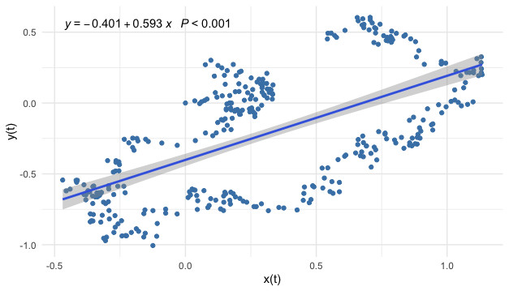Figure 17.6: Linear regression on a dataset generated by the coupling model
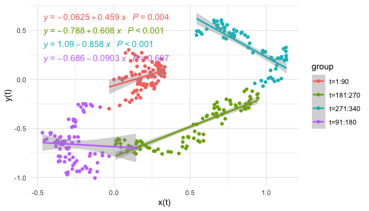Figure 17.7: Linear regressions on subsamples
Figure 17.6 gives the simulated observations from the system (17.1) with the coupling coefficients \(|a_{21}|=a_{12}\). However the dynamical system is randomized so that the samples are “corrupted” by the noises. It becomes uneasy to detect the circle contour in the data visualization. The significance of the statistically estimated coefficient may misguide the readers to conclude that the relation amongst these two variables is linear and positive, while neither is true. If the analyses are conditional on some partial contour paths, namely regressions in smaller time windows, the linear models seem to provide more misleading reports, see figure 17.7.
Simulation
As now we know that the contour is a geometric invariance reflecting through the phase’s property, we can try another way to analyze the relationship. We will build a phase structure from a higher dimensional space and check whether we can find the invariance lower-dimensional geometric shape embedded in this space.555 This procedure is known as delay embedding. Recall that system (17.1) is equivalent to a single second-order differential equation. That means there must be a relation for \(x(t)\), \(\mbox{d}x(t)/\mbox{d}t\), and \(\mbox{d}^{2}x(t)/\mbox{d}t^{2}\). Intuitively, when we discrete the equation to have a time series data \(\mathbf{x}_t\), we expect to see a relation amongst \(\mathbf{x}_t\), \(\mathbf{x}_{t-1}\), and \(\mathbf{x}_{t-2}\). In this way, we can construct a 3D matrix that embeds the 1D time series \(\mathbf{x}_t\):556 One can choose more than three series to construct this matrix, but for visualization, one can only use three series to represent the 3D geometric shape. \[\left[\begin{array}{ccc} \mathbf{x}_{t}, & \mathbf{x}_{t-1}, & \mathbf{x}_{t-2}\end{array}\right]=\left[\begin{array}{ccc} \vdots & \vdots & \vdots\\ x_{s-1} & x_{s-2} & x_{s-3}\\ x_{s} & x_{s-1} & x_{s-2}\\ x_{s+1} & x_{s} & x_{s-1}\\ \vdots & \vdots & \vdots \end{array}\right] =\mathbf{M}.\]
The data manifold \(\mathbf{M}\) is an empirical (re)construction of the state space of the process \(X(t,\omega)\). Each time series \(\mathbf{x}_{t-k} \in \mathbf{M}\) can be thought of as a sample path of \(X(t,\omega)\). The characteristic invariants of \(X(t,\omega)\) are conserved in the (re)constructed state space \(\mathbf{M}\). There is no universal rule to select the proper values of the embedding dimension to achieve a “faithful” reconstruction of the ‘true’ state space. The choice of embedding parameters \(k\) depends on the specific problem to which the embedding procedure is applied.557 A rule of thumb is to choose \(k\) is that \(k>2d_{f}+1\) where \(d_{f}\) is the fractional dimension of the series.
The line trajectory in figure 17.8 gives the phase plot of \([\mathbf{x}_t, \mathbf{x}_{t-6}, \mathbf{x}_{t-12}]\). This plot gives a 3D angle to visualize the relation between the 1D series \(\mathbf{x}_{t}\) and its lags. The trajectory clearly outlines a 2D geometric manifold matrix \(\mathbf{M}\) embedded in the \(\mathbb{R}^{3}\) Euclidean space.558 Formally speaking, a manifold \(\mathcal{M}\) is a locally Euclidean set, with a homeomorphism from an open set containing the element \([x_t,\dots,x_{t-k+1}]\in\mathcal{M}\) to the \(k\)-dimensional Euclidean space \(\mathbb{R}^{k}\), where \(k\) is a parameter called the embedding dimension. In this example, we choose \(k=12\). If the manifold is smooth, the homeomorphism becomes a diffeomorphism, a continuous bijective mapping with a continuous inverse mapping, to the Euclidean space \(\mathbb{R}^{k}\). The dotted curve in figure 17.8 is generated by the deterministic coupling model in (17.1) generated with the simulated parameters used in Euler’s scheme. The fact that the contour of the deterministic model almost matches the stochastic manifold reflects: the coupling (or the skew-symmetric) structure is preserved under the randomization.559 To formally verify this statement, one needs stochastic geometry and stochastic embedding tools, which is not our concern. But intuitively speaking, when the (expectation of) Hamiltonian functions in the deterministic case and randomized case provide similar forms, then the trajectories from two cases also share such similarities.
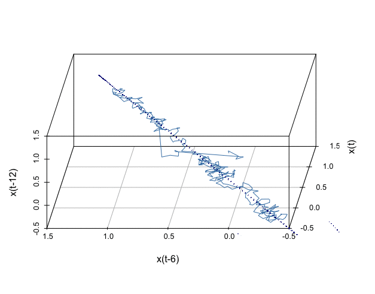Figure 17.8: Embedding the
Therefore, the (re)constructed manifold induces that the intrinsic shape created by the lagged vectors \(\mathbf{x}_{t-6}\), \(\mathbf{x}_{t-12}\) may actually come from the coupling effect involving another variable. We can quickly estimate the coupling relation for this simple simulated model by creating the difference vector and then regressing it on the other variable.
x.lag=c(0,x); x.lag=x.lag[1:length(x.lag)-1];
y.lag=c(0,y); y.lag=y.lag[1:length(y.lag)-1];
d.x=x-x.lag; d.y=y-y.lag # difference
summary(lm(d.x~0+y))$coefficients # epsilon*step.size= 0.0117## Estimate Std. Error t value Pr(>|t|)
## y -0.01028566 0.003901228 -2.636518 0.008761567## Estimate Std. Error t value Pr(>|t|)
## x 0.01101499 0.00350714 3.140734 0.001833556The specific values of the estimation do not make much sense unless one knows the discretized parameters in Euler’s scheme. However, the signs and the ratio of estimates indicate that the underlying manifold of the phase plot can be an ellipse whose height and weight are approximately equivalent. This indication is very close to the underlying true simulated parameters.
Embedding
Now we can turn to a more challenging exercise. Unlike its fundamental role in science, the coupling dynamical structure has not yet been (widely) observed in social science. There seemed not sufficient statistical evidence to support a coupling relation existing amongst two essential variables that can influence the social dynamics.560 The coupling relation is not a causal relation but a simultaneous relation. Much empirical social research seems reluctant to propose a conclusion that aspires to be epistemologically acceptable for simultaneity, since simultaneity neither displays an analyzable causal chain nor provides a simple assessment of the truth or falsity of the direct actions.
Hereby, I plan to demonstrate a procedure to explore a (hidden) coupling structure in the labor market. In economics, people tend to consider an inverse relationship between unemployment and inflation: lowering the unemployment rate may cause an increase in the inflation rate and vice versa. The empirical evidence supporting this relationship was given by a declined estimated slope of a curve that describes the unemployment and wages from 1861-1957 in the U.K. The curve is called the Phillips curve.561 The Phillips curve inspired economists to propose fiscal policies to lower the unemployment rate by stimulating the economy that causes the rise of GDP and consumption index, which is called Keynesian policies. Although this idea has been questioned about being effective in the long run, the Phillips curve remains one of the primary devices for analyzing unemployment and inflation in the central bureaucracies.
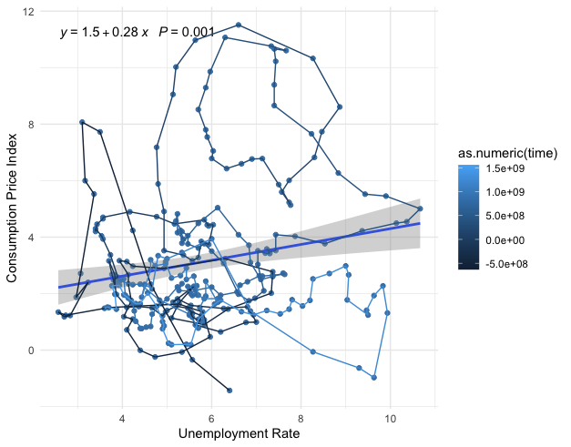Figure 17.9: (Seasonally adjusted) U.S. Unemployment Rate Percent Change and CPI Percent Change (1950-2019)
Figure 17.9 is the phase plot of two variables representing the dynamics of unemployment and inflation. The dynamics in this phase plot are drawn by a path with the morphed color starting from 1950 (dark blue) to 2020 (light blue). In the early stage of the path (dark blue part), a downward cluster seems to favor the Phillips curve’s argument. However, the later stage of the path (light blue part) seems to lead to a rotation or a curl. The statistical regression shows a positive significant coefficient that is similar to the misleading result we saw in figure 17.6.
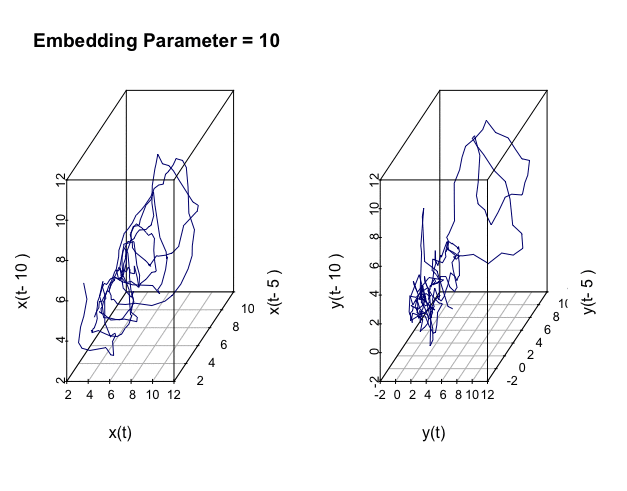Figure 17.10: Embedded manifolds
library(readxl)
# Data resource (article): https://www.stlouisfed.org/open-vault/2020/january/what-is-phillips-curve-why-flattened)
# Data download: https://fred.stlouisfed.org/graph/fredgraph.xls?g=xar2
fredgraph = read_excel("~/Documents/fredgraph.xls",skip = 11)ur=fredgraph$UNRATE # Unemployment Rate Percent Change (Seasonally Adjusted)
CTPI=fredgraph$PCECTPI_PC1 # Personal Consumption Expenditures Chain-type Price Index Percent Change from Year Ago (Seasonally Adjusted)
ar(ur)$order## [1] 2## [1] 9Both series show the AR structure having two or more lags. So we can (re)construct the empirical state space by embedding.562 The AR structure vaguely relates to the fractal one. Since the statistical model selects the maximum lag of the series as \(9\), I am setting the embedding parameter in an interval covering \(19\). The embedded manifolds of the two series show some geometric similarities to what we saw in figure 17.8.
After differencing the series, we proceed to estimate the coupling structure as we did in the previous simulation. Even though the signs favor the coupling, the estimates are not statistically significantly different from zero.563 This statistical insignificancy perhaps implies a profound issue in exploring the empirical coupling structure in social science. As a crucial invariant in dynamics, I conjecture that an essential coupling structure in social science must be hidden in the deep layers beneath the superficial social relations. This structure itself brings in certain foreseeable trajectories for the social dynamics that may or may not be of interest for the participants who are part of the processes. In this sense, if the relation is too “obvious,” then many forces will involve directing, twisting, or manipulating the dynamical laws, which will consequently erase the trace of this relation. On the other hand, if we view the coupling structure in terms of waves or cycles (in figure 17.13), we can still observe the series acquiring such patterns (as well as numerous social variables). It would be absurd to attribute all fluctuations and vibrations to the causes of noises or exogenous forces, and to confirm the vanish of the coupling based on the statistical insignificancy.
# Take the lag operator on ur and CTPI
ur.lag=c(0,ur); ur.lag=ur.lag[1:length(ur.lag)-1]; CTPI.lag=c(0,CTPI); CTPI.lag=CTPI.lag[1:length(CTPI.lag)-1];
# Difference
d.ur=ur - ur.lag; d.CTPI=CTPI - CTPI.lag
# Regressions
summary(lm(d.ur ~ 0 + CTPI))$coefficient## Estimate Std. Error t value Pr(>|t|)
## CTPI 0.007086629 0.008124984 0.8722021 0.3838508## Estimate Std. Error t value Pr(>|t|)
## ur -0.004749481 0.006394057 -0.7427962 0.4582323One potential cause of the statistical insignificancy in the example is that the linearity is too significant. The principal measurements of the two variables must share a significant linear relation. This relation is so obvious that the other features of the correlations of the two series are de facto covered or suppressed in this linear model. To recover any other potentially non-linear relation, we need to get rid of the effect caused by the linear one or to extract the effect caused by the one of our interests.
I will decompose the data manifold \(\mathbf{M}=[\mathbf{x}_t,\dots,\mathbf{x}_{t-k}] \in \mathcal{M}\) to extract interesting components. The idea is to ignore the “basis” associated with the largest “eigenvalue” that is thought to bring in the significant linear relation of two series and to focus on the “bases” associated with the rest of essential “eigenvalues” straight afterward, i.e., the 2nd and the 3rd largest “eigenvalues.”
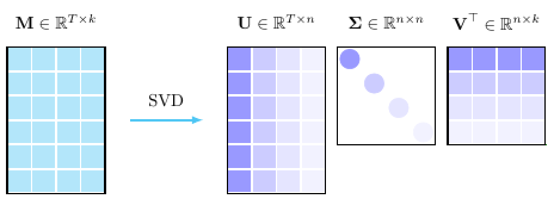Figure 17.11: Singular value decomposition
Let \(T\) be the length of the time series, and \(k\) be the embedding dimension. Because the data manifold \(\mathbf{M}\in\mathbb{R}^{T\times k}\) is not a square matrix, the standard eigen-decomposition does not work for \(\mathbf{M}\), but it works for \(\mathbf{M}^{\top}\mathbf{M} \in \mathbb{R}^{k\times k}\), and \(\mathbf{M}\mathbf{M}^{\top} \in \mathbb{R}^{T\times T}\). Assume that the matrix \(\mathbf{M}\) has any rank \(n\), such that \(n\leq k<T\), let \(\mathbf{U}^{\top}\in\mathbb{R}^{n\times T}\) be the left eigenvector of \(\mathbf{M}\mathbf{M}^{\top}\) and \(\mathbf{V}\in\mathbb{R}^{k\times n}\) be the right eigenvector of \(\mathbf{M}^{\top}\mathbf{M}\), then we have the following decomposition \[\begin{align*}\mathbf{M}=\mathbf{U}\Sigma\mathbf{V}^{\top} &\mbox{ where } \mathbf{\Sigma}=\mbox{diag}(\sigma_{1},\dots,\sigma_{n}),\\& \mbox{ and } \sigma_{1}>\sigma_2>\dots>\sigma_{n}\in\mathbb{R} \end{align*}\] The \(\{\sigma_{i}\}_{i=1,\dots,k}\) are the roots of the characteristic functions \[\mbox{det}\left(\mathbf{M}\mathbf{M}^{\top}-\sigma_{i}^{2}\mathbf{I}_{T}\right)=\mbox{det}\left(\mathbf{M}^{\top}\mathbf{M}-\sigma_{i}^{2}\mathbf{I}_{k}\right)=0\] by the fact \(\mbox{det}(\mathbf{M}\mathbf{M}^{\top})=\mbox{det}(\mathbf{M}^{\top}\mathbf{M})\). The value \(\sigma_i\) is called the singular value of the matrix \(\mathbf{M}\), and the decomposition \(\mathbf{M}=\mathbf{U}\Sigma\mathbf{V}^{\top}\) is called the singular value decomposition.
Sketch of the proof
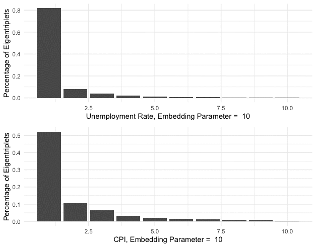Figure 17.12: Characteristic contributions of the singular alues
As the role of the principal eigenvalue (see chapter 12.2), the principal singular value \(\sigma_1\) associates with the base \(\mathbf{u}_1\) and \(\mathbf{v}_1\) that intends to capture the main characteristic contribution of the data manifold. Figure 17.12 shows the relative weights of the characteristic contributions \[\left\{\frac{\sigma_{i}}{\sum_{j=1}^{k} \sigma_j}\right\}_{i=1,\dots,k}.\] As you can see, the principal singular values \(\sigma_1\) in unemployment and CPI series respectively count for about \(75\%\) and \(50\%\) of the characteristic contributions.
Each singular value induces an eigentriplet \(\mathbf{U}\Sigma_{i}\mathbf{V}^{\top}\) \[\begin{align*}\mathbf{M}&=\mathbf{U}\Sigma\mathbf{V}^{\top}=\mathbf{U}\left(\left[\begin{array}{cccc} \sigma_{1}\\ & 0\\ & & \ddots\\ & & & 0 \end{array}\right]+\cdots+\left[\begin{array}{cccc} 0\\ & \ddots\\ & & 0\\ & & & \sigma_{n} \end{array}\right]\right)\mathbf{V}^{T}\\ &=\mathbf{U}\Sigma_{1}\mathbf{V}^{\top}+\cdots + \mathbf{U}\Sigma_n\mathbf{V}^{\top}\end{align*}\] By the particular data structure of the embedding data manifold, we can reconstruct the data series \(\mathbf{x}_{T}\) by diagonally averaging the entities.564 \[\begin{align*}&\mbox{diagonal average of }\mathbf{M} \\&=\frac{1}{k}\left[\begin{array}{ccccc} x_{1} & & x_{T}\\ \vdots & \overset{\mbox{add}}{\searrow}\\ x_{i} & & x_{1}\\ & \overset{\mbox{add}}{\searrow} & & \overset{\mbox{add}}{\searrow}\\ \vdots & & x_{i} & & x_{1}\\ x_{T-1} & & \vdots & \overset{\mbox{add}}{\searrow}\\ & \overset{\mbox{add}}{\searrow} & & & x_{i}\\ x_{T} & & x_{T-1} & & \vdots \end{array}\right]\\ &=\left[\begin{array}{c} \frac{x_{1}k}{k}\\ \vdots\\ \frac{x_{T}k}{k} \end{array}\right]=\mathbf{x}_{T}.\end{align*}\] Then applying the diagonally averaging on both sides of the eigentriplets representation, we have \[\begin{align*}\mathbf{x}_T&=\mbox{diag. average }(\mathbf{U}\Sigma_{1}\mathbf{V}^{\top})+\cdots + \mbox{diag. average }(\mathbf{U}\Sigma_n\mathbf{V}^{\top})\\ &= \tilde{\mathbf{x}}_{1,T} + \cdots + \tilde{\mathbf{x}}_{n,T}.\end{align*}\] where \(\tilde{\mathbf{x}}_{i,T}\) is the \(i\)-th reconstructed eigentriplets of the series \(\mathbf{x}_T\). This procedure of analyzing \(\mathbf{x}_{T}\) by its eigentriplets is called the singular spectrum analysis.
The results of detecting statistical significant coupling structure from the 2nd and 3rd eigentriplets are given below.
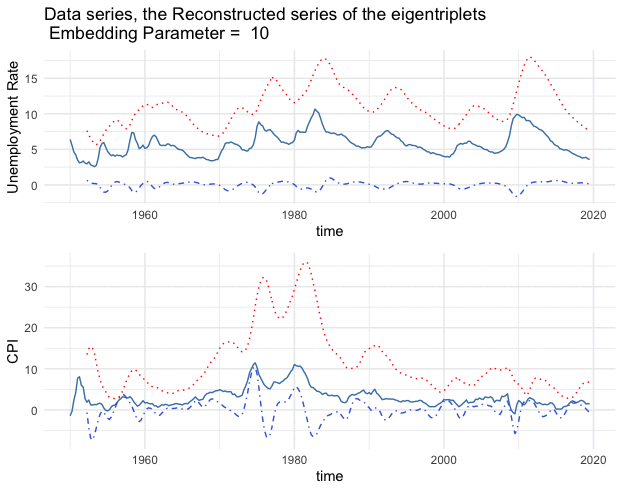Figure 17.13: Series (blue lines) and the reconstructed series (1st eigentriples - red lines, 2nd and 3rd eigentriples - blue dots)
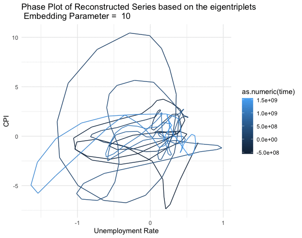Figure 17.14: Phase plot of the reconstructed series (2nd and 3rd eigentriples)
Code for singular spectrum analysis under different embedding dimensions
## Dimension Estimate Std. Error t-value Pr(>|t|)
## 1 Y 10 -0.01559150 0.003637870 -4.285887 2.537768e-05
## 2 X 10 0.60739834 0.114225915 5.317518 2.213661e-07
## 3 Y 11 -0.16597384 0.057008122 -2.911407 3.900653e-03
## 4 X 11 0.02574711 0.011568597 2.225603 2.687293e-02
## 5 Y 12 -0.03087472 0.006831992 -4.519139 9.336201e-06
## 6 X 12 0.26562903 0.075874842 3.500884 5.432930e-04
## 7 Y 13 -0.18863587 0.037672804 -5.007216 1.006678e-06
## 8 X 13 0.06203389 0.011407745 5.437875 1.221244e-07
## 9 Y 14 0.04153621 0.009208329 4.510722 9.715312e-06
## 10 X 14 -0.21789431 0.053418419 -4.079011 5.987434e-05
## 11 Y 15 -0.14860519 0.022172672 -6.702177 1.237395e-10
## 12 X 15 0.15803797 0.023696341 6.669298 1.499316e-10
## 13 Y 16 -0.13855174 0.019843469 -6.982234 2.367912e-11
## 14 X 16 0.12543872 0.014849990 8.447057 2.052739e-15
## 15 Y 17 -0.02766512 0.004540637 -6.092784 3.943563e-09
## 16 X 17 0.29414552 0.079312485 3.708691 2.543133e-04
## 17 Y 18 -0.04422313 0.007238680 -6.109280 3.619062e-09
## 18 X 18 0.34219548 0.047289388 7.236200 5.143672e-12
## 19 Y 19 -0.13463442 0.019583725 -6.874811 4.592385e-11
## 20 X 19 0.03440891 0.012179380 2.825178 5.091915e-03
## 21 Y 20 0.10752022 0.019679535 5.463555 1.095190e-07
## 22 X 20 -0.11288033 0.015673030 -7.202202 6.438775e-12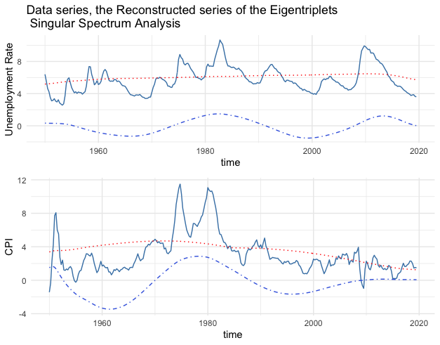Figure 17.15: Series (blue lines) and the reconstructed series (1st eigentriples - red lines, 2nd and 3rd eigentriples - blue dots)
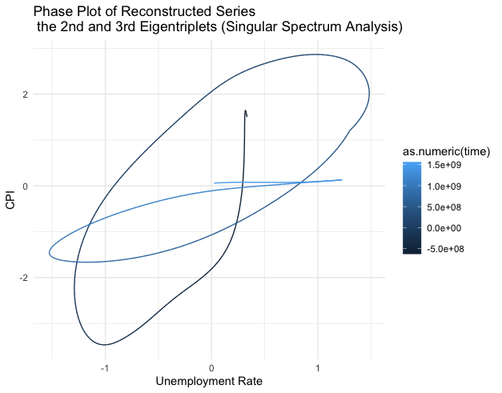Figure 17.16: Phase plot of the reconstructed series (2nd and 3rd eigentriples)
######## An alternative way
library(Rssa)
ssa.x=ssa(ur); ssa.y=ssa(CTPI)
# reconstruct 2nd and 3rd eigentriplets
cp23.x=reconstruct(ssa.x,groups=list(2:3))
cp23.y=reconstruct(ssa.y,groups=list(2:3))
cp23.x=cp23.x$F1 # base
cp23.y=cp23.y$F1 # base
lag.cp23x=c(0,cp23.x); lag.cp23x=lag.cp23x[1:length(lag.cp23x)-1];
lag.cp23y=c(0,cp23.y); lag.cp23y=lag.cp23y[1:length(lag.cp23y)-1];
dcp23.y = cp23.y - lag.cp23x
dcp23.x = cp23.x - lag.cp23y
summary(lm(dcp23.y~0+cp23.x))$coefficients## Estimate Std. Error t value Pr(>|t|)
## cp23.x 0.3157429 0.080077 3.94299 0.000101913## Estimate Std. Error t value Pr(>|t|)
## cp23.y -0.6133861 0.02116907 -28.97559 5.654261e-86SSA plot
Page built: 2021-05-21